Quick plot
qplot is a shortcut designed to be familiar if you're used to base
plot(). It's a convenient wrapper for creating a number of
different types of plots using a consistent calling scheme. It's great
for allowing you to produce plots quickly, but I highly recommend
learning ggplot() as it makes it easier to create
complex graphics.
qplot(x, y = NULL, ..., data, facets = NULL, margins = FALSE, geom = "auto", xlim = c(NA, NA), ylim = c(NA, NA), log = "", main = NULL, xlab = deparse(substitute(x)), ylab = deparse(substitute(y)), asp = NA, stat = NULL, position = NULL) quickplot(x, y = NULL, ..., data, facets = NULL, margins = FALSE, geom = "auto", xlim = c(NA, NA), ylim = c(NA, NA), log = "", main = NULL, xlab = deparse(substitute(x)), ylab = deparse(substitute(y)), asp = NA, stat = NULL, position = NULL)
Arguments
- x, y, ...
Aesthetics passed into each layer
- data
Data frame to use (optional). If not specified, will create one, extracting vectors from the current environment.
- facets
faceting formula to use. Picks
facet_wraporfacet_griddepending on whether the formula is one- or two-sided- margins
See
facet_grid: display marginal facets?- geom
Character vector specifying geom(s) to draw. Defaults to "point" if x and y are specified, and "histogram" if only x is specified.
- xlim, ylim
X and y axis limits
- log
Which variables to log transform ("x", "y", or "xy")
- main, xlab, ylab
Character vector (or expression) giving plot title, x axis label, and y axis label respectively.
- asp
The y/x aspect ratio
- stat, position
DEPRECATED.
Examples
# Use data from data.frame qplot(mpg, wt, data = mtcars)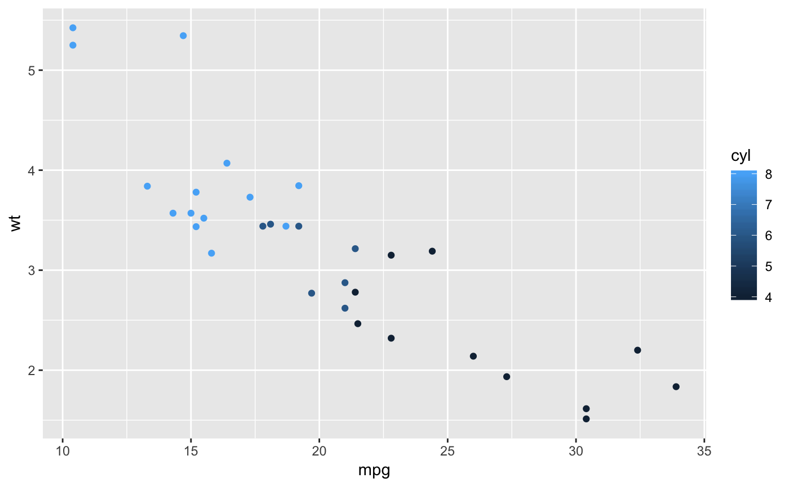qplot(mpg, wt, data = mtcars, colour = cyl)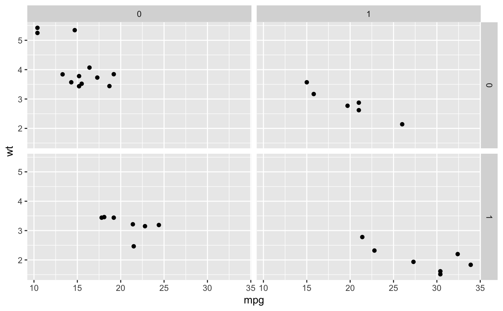qplot(mpg, wt, data = mtcars, size = cyl)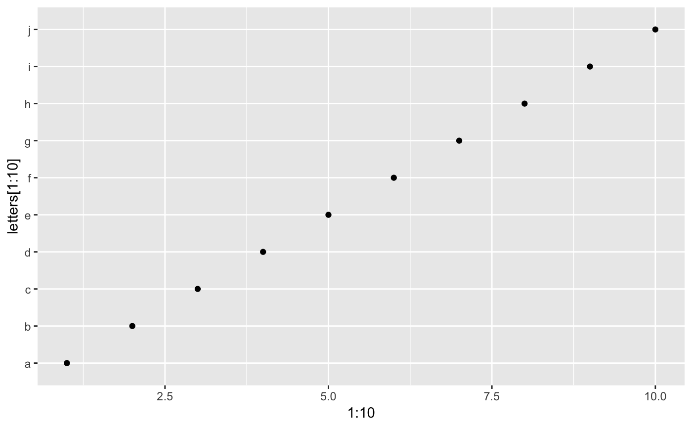qplot(mpg, wt, data = mtcars, facets = vs ~ am)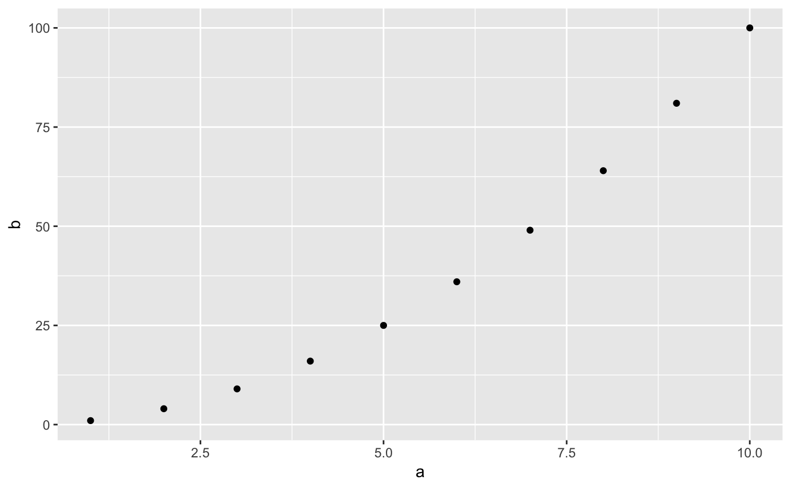qplot(1:10, rnorm(10), colour = runif(10))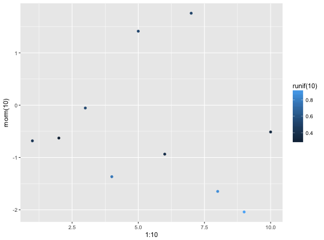qplot(1:10, letters[1:10])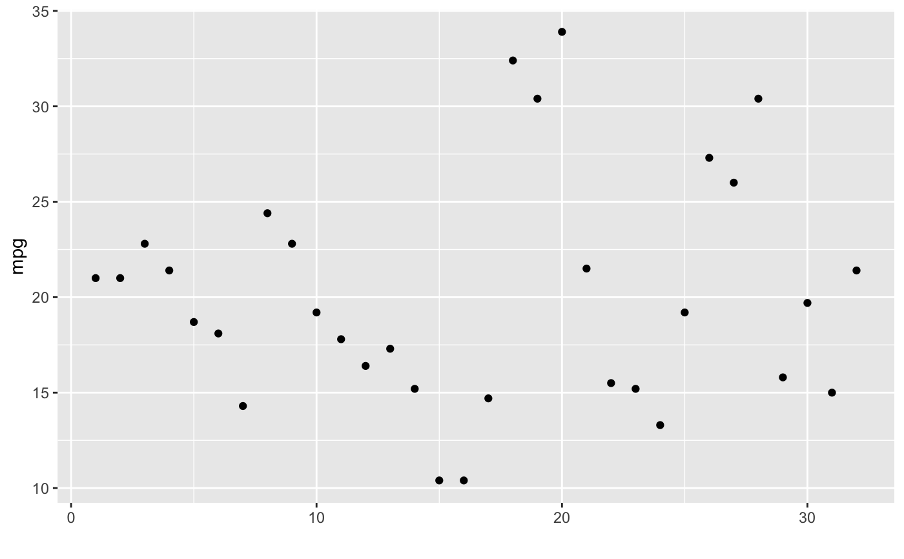mod <- lm(mpg ~ wt, data = mtcars) qplot(resid(mod), fitted(mod))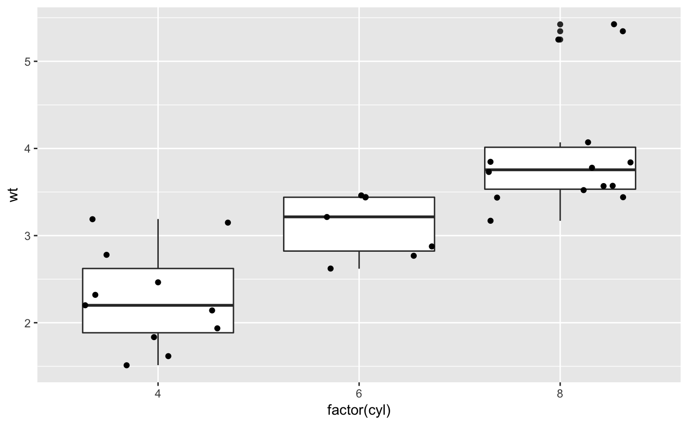f <- function() { a <- 1:10 b <- a ^ 2 qplot(a, b) } f()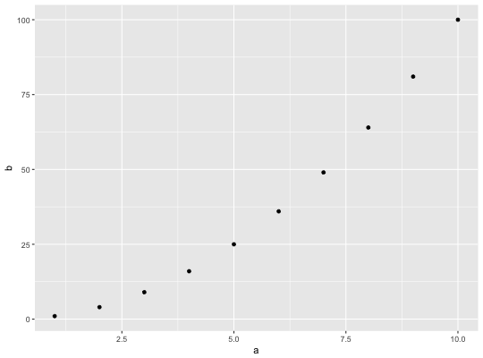# To set aesthetics, wrap in I() qplot(mpg, wt, data = mtcars, colour = I("red"))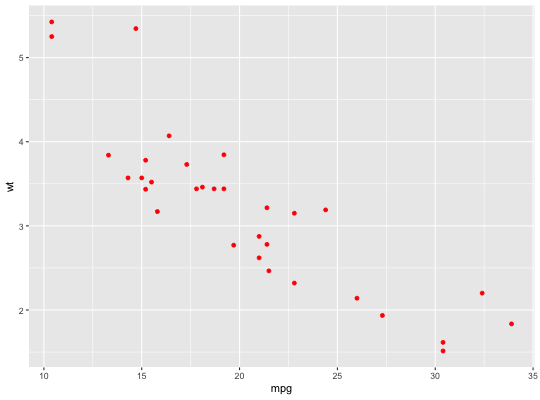# qplot will attempt to guess what geom you want depending on the input # both x and y supplied = scatterplot qplot(mpg, wt, data = mtcars)# just x supplied = histogram qplot(mpg, data = mtcars)#>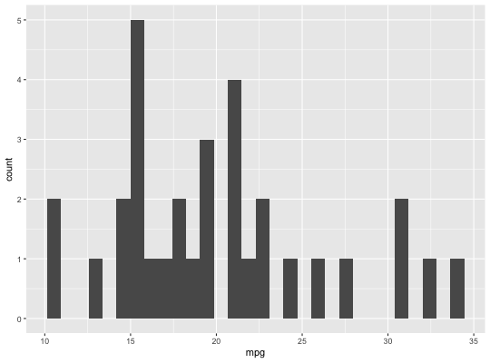# just y supplied = scatterplot, with x = seq_along(y) qplot(y = mpg, data = mtcars)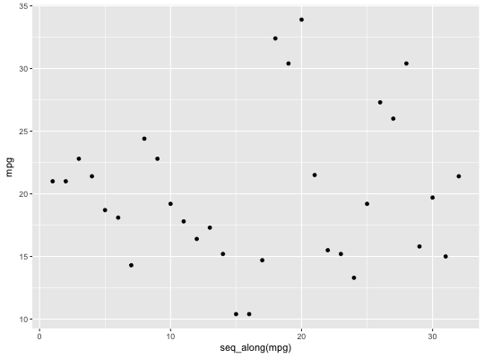# Use different geoms qplot(mpg, wt, data = mtcars, geom = "path")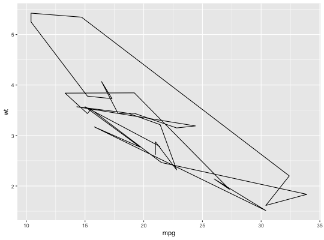qplot(factor(cyl), wt, data = mtcars, geom = c("boxplot", "jitter"))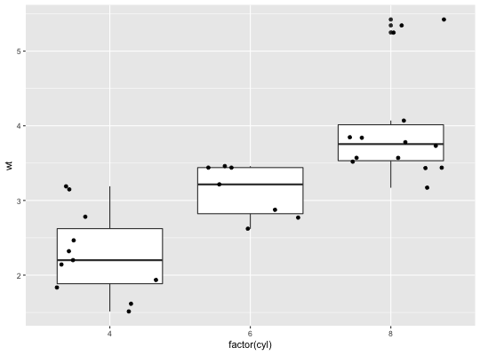qplot(mpg, data = mtcars, geom = "dotplot")#>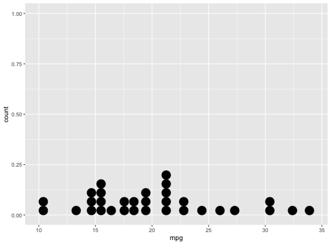